项目展示板块 · 纯内容版
这是杨鸿产品设计师作品集「项目展示板块」改版的静态内容快照。原版是 React 交互网页，需点击项目才能进入；本文件把 8 个项目的全部可见文字与图像说明按顺序展开，供无网页操作能力的 AI 直接读取与评分。
图像文件位于同目录 assets/，以相对路径引用；每张图都有中文 figcaption 说明内容，即使无法查看图片也能据此判断版面。视觉与数值详见 03-视觉版式说明书.md，真实渲染截图见 06-视觉证据/。
版式规则（4 条）：① 产品占据首屏与每一屏，全页仅保留编号、项目名、功能短词与状态；② 单纸色 + 单墨色 + 单一强调色，强调色只在极小面积；③ 编辑式破格：跨栏、负边距叠压、微旋转、描边巨字、竖排标签；④ 满幅 / 大留白 / 反相 / 横向胶片交替，节奏与对比由图像推进。
8 个项目：01 《心景》疗愈灯具 ｜ 02 《慢行者》 ｜ 03 实习灯具设计 ｜ 04 情绪疗愈灯具 ｜ 08 猫冰 CAT-ICE : THERMAL LAB ｜ 06 模块化木质座椅 ｜ 05 UI界面流程设计 ｜ 07 产品概念设计
01 · 《心景》疗愈灯具
类别：产品设计 ｜ 状态：毕业设计 · 已落地 ｜ 主题色：纸 #F4EFE6 / 墨 #1B1916 / 强调 #D9762B
01 首屏 · 产品主视觉
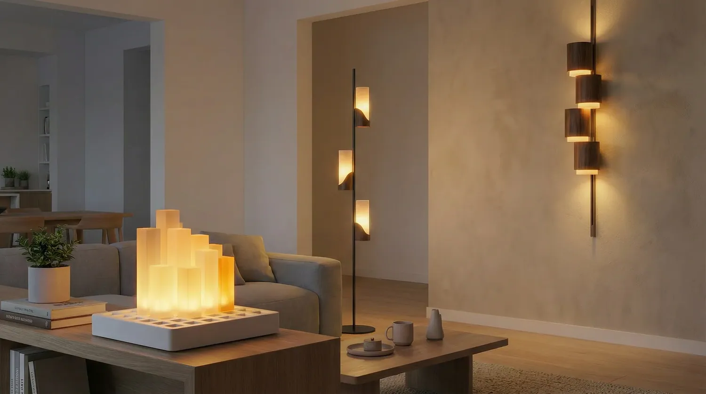
主视觉：《心景》系列灯具聚焦特写（完整显示（不裁切）；同一张图另有一层模糊背景）
PROJECT 01 / 产品设计
《心景》疗愈灯具
基于独居青年情绪疗愈场景的灯具设计 ｜ 毕业设计 · 已落地
超大描边编号 01；右下竖排 SCROLL ↓；标题压在图片上。
02 一句定位 · 两个数字
把「不可见的情绪需求」，做成可插拔、可堆叠、能回应的光。
209 — 份问卷发放 / 回收
72.25% — 偶尔感到孤独（强调色）
本段为全页文字密度最高处，大留白，仅一行定位句 + 两个数字。
03 错位双图 · 产品与细节
 FIG. 01 大图：夜间发光效果（铺满裁切）
FIG. 01 大图：夜间发光效果（铺满裁切）
 小图：《栖木》落地灯细节（铺满裁切；旋转 -2.2°，压在大图右下并越界）
小图：《栖木》落地灯细节（铺满裁切；旋转 -2.2°，压在大图右下并越界）
04 反相全幅 · 可实现功能
FUNCTIONS / 04 ｜ 功能均可实现
 全幅产品图：整体效果展示（铺满裁切）
全幅产品图：整体效果展示（铺满裁切）
- 01 进门即亮（浮在图边缘的短词胶囊）
- 02 睡前渐暗（浮在图边缘的短词胶囊）
- 03 夜起指引（浮在图边缘的短词胶囊）
- 04 模块可动（浮在图边缘的短词胶囊）
底色反相为 #17181B 深色；底部有描边巨字 OBJECT。
05 偏栏窄图 · 设计细节
DETAIL / MATERIAL / PROCESS（竖排）；巨型描边编号 01；大面积留白。
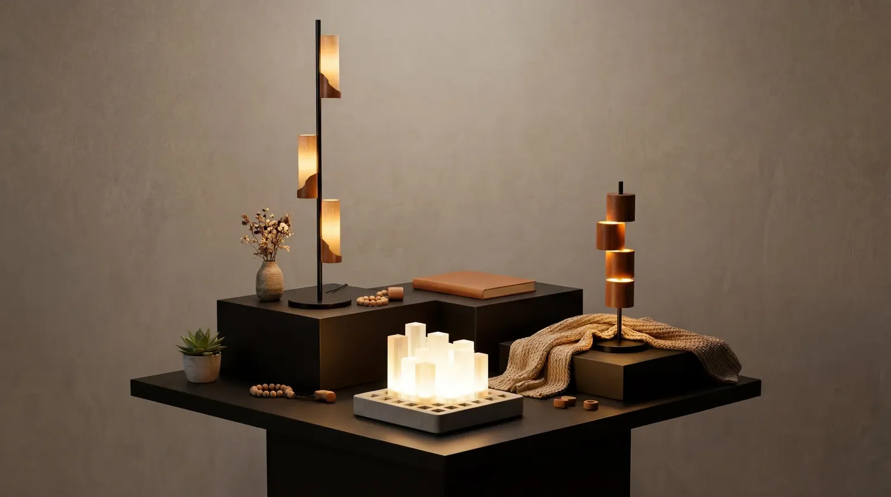
窄图：分层展台式摆放（铺满裁切；旋转 +1.6°，硬阴影）
本科毕业设计 · 2026 届毕业设计作品展
市场调研与问卷 · 概念与草图 · 结构 / 光学验证
07 收尾 · 进展与出处
进展 毕业设计 · 已落地
作品集内所有项目所述功能均可实现。
资料：论文 · 展板 / 实物 · 功能可实现
← 返回作品集
08 下一项目全幅预告
NEXT PROJECT / 02 →
《慢行者》
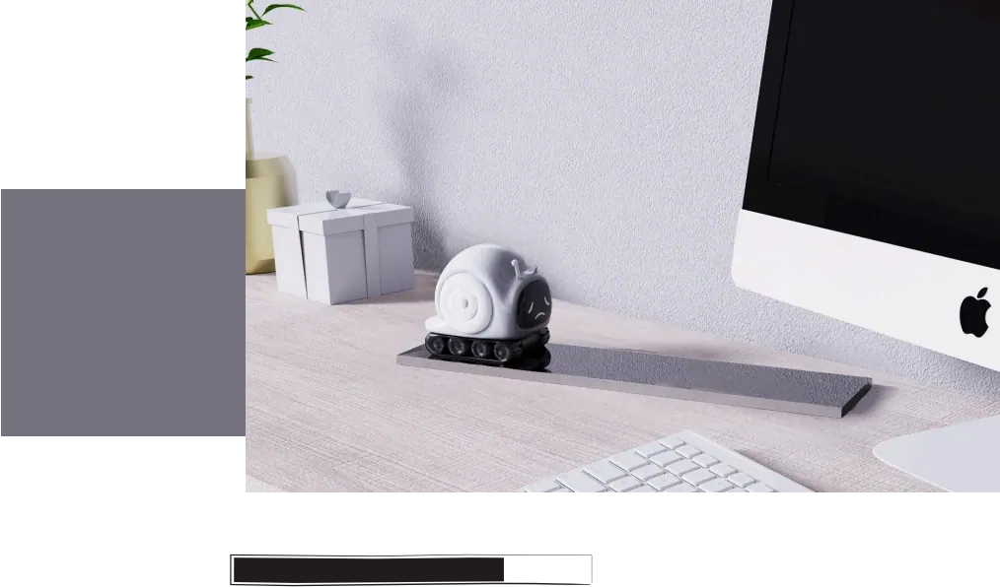
《慢行者》 主视觉（暗化）
02 · 《慢行者》
类别：产品设计 ｜ 状态：设计方案 · 资料完整 ｜ 主题色：纸 #ECF0EE / 墨 #16201E / 强调 #2F7D6B
01 首屏 · 产品主视觉
主视觉：《慢行者》桌面摆放效果（完整显示（不裁切）；同一张图另有一层模糊背景）
PROJECT 02 / 产品设计
《慢行者》
数字化等待的物理疗愈装置 ｜ 设计方案 · 资料完整
超大描边编号 02；右下竖排 SCROLL ↓；标题压在图片上。
02 一句定位 · 两个数字
把下载进度交给一只蜗牛：数字等待，变成看得见的物理旅程。
本段为全页文字密度最高处，大留白，仅一行定位句 + 两个数字。
03 错位双图 · 产品与细节
 FIG. 01 大图：产品渲染图（铺满裁切）
FIG. 01 大图：产品渲染图（铺满裁切）
 小图：使用场景 1（铺满裁切；旋转 -2.2°，压在大图右下并越界）
小图：使用场景 1（铺满裁切；旋转 -2.2°，压在大图右下并越界）
04 反相全幅 · 可实现功能
FUNCTIONS / 03 ｜ 功能均可实现
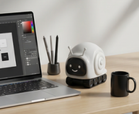
全幅产品图：使用场景 2（铺满裁切）
- 01 进度同步（浮在图边缘的短词胶囊）
- 02 启动与呼吸光（浮在图边缘的短词胶囊）
- 03 完成反馈（浮在图边缘的短词胶囊）
底色反相为 #17181B 深色；底部有描边巨字 OBJECT。
05 偏栏窄图 · 设计细节
DETAIL / MATERIAL / PROCESS（竖排）；巨型描边编号 02；大面积留白。
 窄图：灵感与概念板（铺满裁切；旋转 +1.6°，硬阴影）
窄图：灵感与概念板（铺满裁切；旋转 +1.6°，硬阴影）
桌面交互装置设计
用户调研 · 概念发散 · 草图深化
07 收尾 · 进展与出处
进展 设计方案 · 已完成可视化
作品集内所有项目所述功能均可实现。
资料：现有资料 · 功能可实现
← 返回作品集
08 下一项目全幅预告
NEXT PROJECT / 03 →
实习灯具设计
 实习灯具设计 主视觉（暗化）
实习灯具设计 主视觉（暗化）
03 · 实习灯具设计
类别：产品设计 ｜ 状态：实习项目 · 打样落地阶段 ｜ 主题色：纸 #17191C / 墨 #F3F0E9 / 强调 #E2A34B（深色主题）
01 首屏 · 产品主视觉
主视觉：孔雀石光环吊灯 · 客厅场景（铺满裁切；同一张图另有一层模糊背景）
PROJECT 03 / 产品设计
实习灯具设计
实习期间完成的灯具设计：材质探索与 AI 形 ｜ 实习项目 · 打样落地阶段
超大描边编号 03；右下竖排 SCROLL ↓；标题压在图片上。
02 一句定位 · 两个数字
一边把孔雀石送进工程图纸，一边用 AI 把灯具形态快速铺开。
2 — 张外观造型评审表
打样 — 评审结果勾选（强调色）
本段为全页文字密度最高处，大留白，仅一行定位句 + 两个数字。
03 错位双图 · 产品与细节
 FIG. 01 大图：孔雀石环形吊灯主视觉（铺满裁切）
FIG. 01 大图：孔雀石环形吊灯主视觉（铺满裁切）
 小图：棱纹玻璃水滴吊灯（AI 形态线）（铺满裁切；旋转 -2.2°，压在大图右下并越界）
小图：棱纹玻璃水滴吊灯（AI 形态线）（铺满裁切；旋转 -2.2°，压在大图右下并越界）
04 反相全幅 · 可实现功能
FUNCTIONS / 04 ｜ 功能均可实现
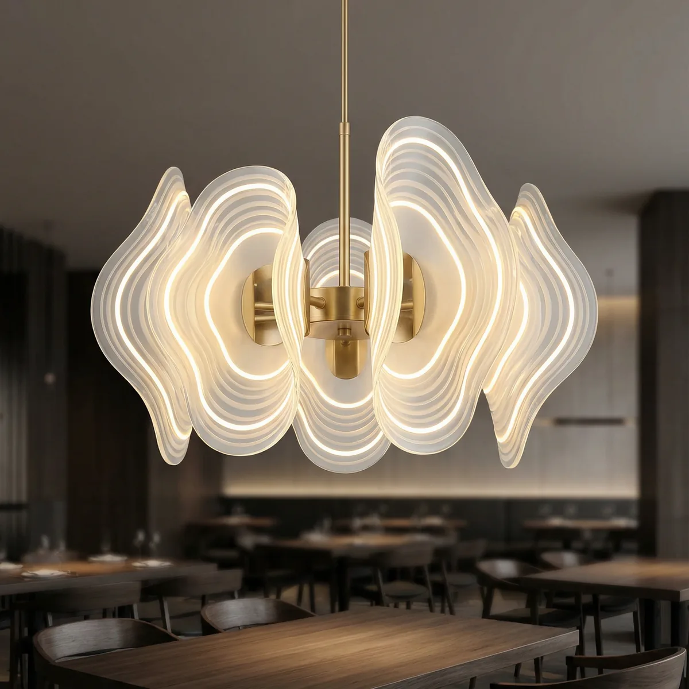
全幅产品图：音浪波浪灯（AI 形态线）（铺满裁切）
- 01 3000K 柔光（浮在图边缘的短词胶囊）
- 02 孔雀石贴边（浮在图边缘的短词胶囊）
- 03 金属结构（浮在图边缘的短词胶囊）
- 04 系列化适配（浮在图边缘的短词胶囊）
底色反相为 #F2EFE7 浅色；底部有描边巨字 OBJECT。
05 偏栏窄图 · 设计细节
DETAIL / MATERIAL / PROCESS（竖排）；巨型描边编号 03；大面积留白。
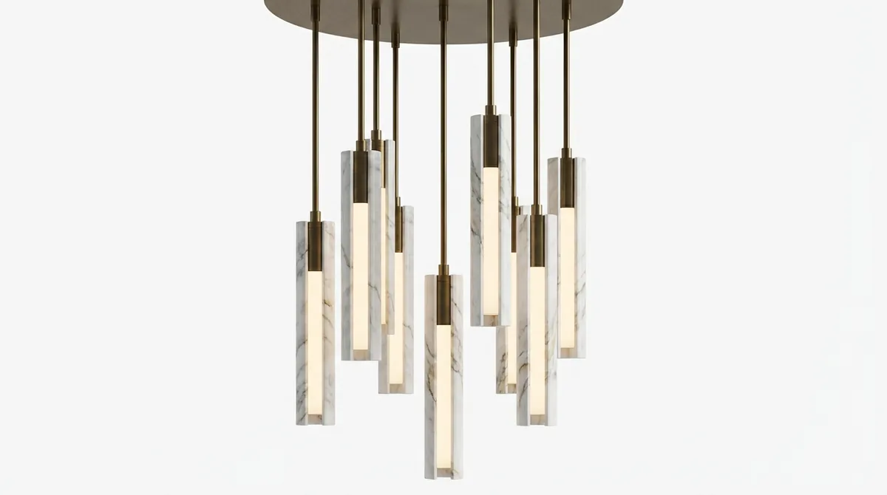
窄图：石材柱形灯（AI 形态线）（铺满裁切；旋转 +1.6°，硬阴影）
实习期间 · VELUCE 灯具外观设计与 AI
材质与造型方案 · 工程图纸绘制 · 外观造型评审
06 横向胶片 · 图像档案
IMAGE ARCHIVE / 06 FRAMES ｜ DRAG ↔（可横向拖动，桌面 5 帧、宽度与上下位置各不相同）
帧 01：孔雀石环形吊灯主视觉（铺满裁切）
帧 02：棱纹玻璃水滴吊灯（AI 形态线）（铺满裁切）
帧 03：音浪波浪灯（AI 形态线）（铺满裁切）
帧 04：石材柱形灯（AI 形态线）（铺满裁切）
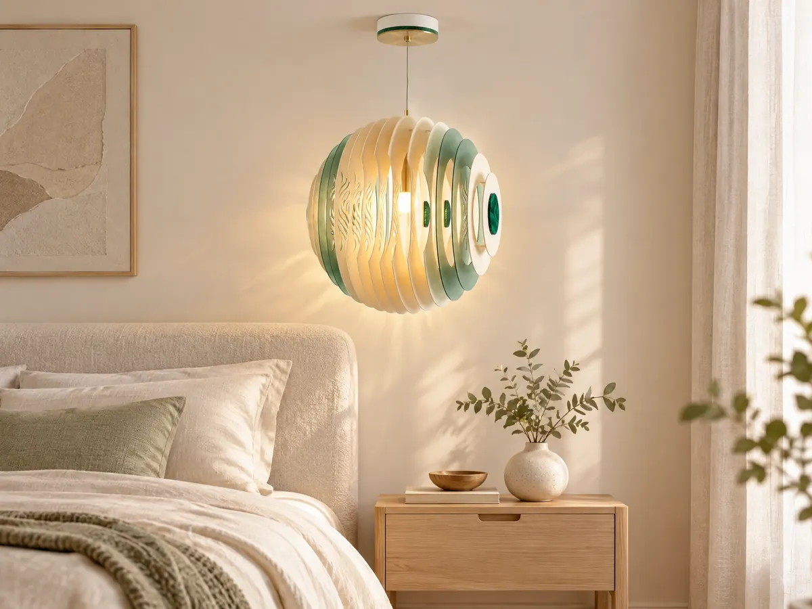
帧 05：卧室场景（铺满裁切）
07 收尾 · 进展与出处
进展 已进入打样落地阶段
孔雀石系列已开始落地 · 其余形态或细节尚未确认
作品集内所有项目所述功能均可实现。
资料：评审表 · 台灯 · 评审表 · 客厅吊灯 · AI 形态线
← 返回作品集
08 下一项目全幅预告
NEXT PROJECT / 04 →
情绪疗愈灯具
 情绪疗愈灯具 主视觉（暗化）
情绪疗愈灯具 主视觉（暗化）
04 · 情绪疗愈灯具
类别：产品设计 ｜ 状态：设计方案 · 交互验证 ｜ 主题色：纸 #F7F3EC / 墨 #24201C / 强调 #C4632E
01 首屏 · 产品主视觉
主视觉：篝火灯 · 电子火焰与木柴（铺满裁切；同一张图另有一层模糊背景）
PROJECT 04 / 产品设计
情绪疗愈灯具
以「手的动作」为开关的交互灯具系列 ｜ 设计方案 · 交互验证
超大描边编号 04；右下竖排 SCROLL ↓；标题压在图片上。
02 一句定位 · 两个数字
不开按钮，开一个动作：推入、握持、添柴，灯才亮。
本段为全页文字密度最高处，大留白，仅一行定位句 + 两个数字。
03 错位双图 · 产品与细节
 FIG. 01 大图：填补心空 · 手部交互（铺满裁切）
FIG. 01 大图：填补心空 · 手部交互（铺满裁切）
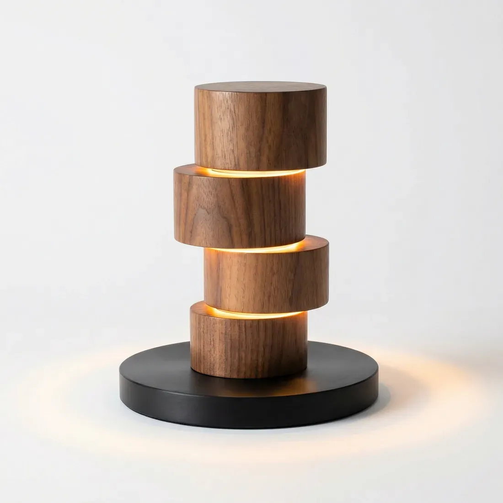
小图：胡桃木圆柱层叠灯（铺满裁切；旋转 -2.2°，压在大图右下并越界）
04 反相全幅 · 可实现功能
FUNCTIONS / 04 ｜ 功能均可实现
 全幅产品图：切割立方灯三态（铺满裁切）
全幅产品图：切割立方灯三态（铺满裁切）
- 01 推入 / 抽出（浮在图边缘的短词胶囊）
- 02 添柴增亮（浮在图边缘的短词胶囊）
- 03 握持变色（浮在图边缘的短词胶囊）
- 04 三态推进（浮在图边缘的短词胶囊）
底色反相为 #17181B 深色；底部有描边巨字 OBJECT。
05 偏栏窄图 · 设计细节
DETAIL / MATERIAL / PROCESS（竖排）；巨型描边编号 04；大面积留白。
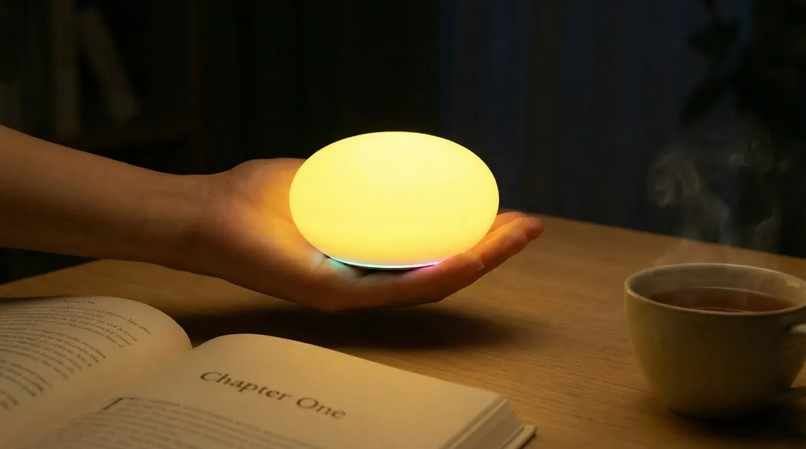
窄图：卵石灯（铺满裁切；旋转 +1.6°，硬阴影）
交互灯具系列设计
调研 · 概念草图 · 交互验证
07 收尾 · 进展与出处
进展 设计方案 · 已完成交互验证
作品集内所有项目所述功能均可实现。
资料：现有资料 · 功能可实现
← 返回作品集
08 下一项目全幅预告
NEXT PROJECT / 08 →
猫冰 CAT-ICE : THERMAL LAB
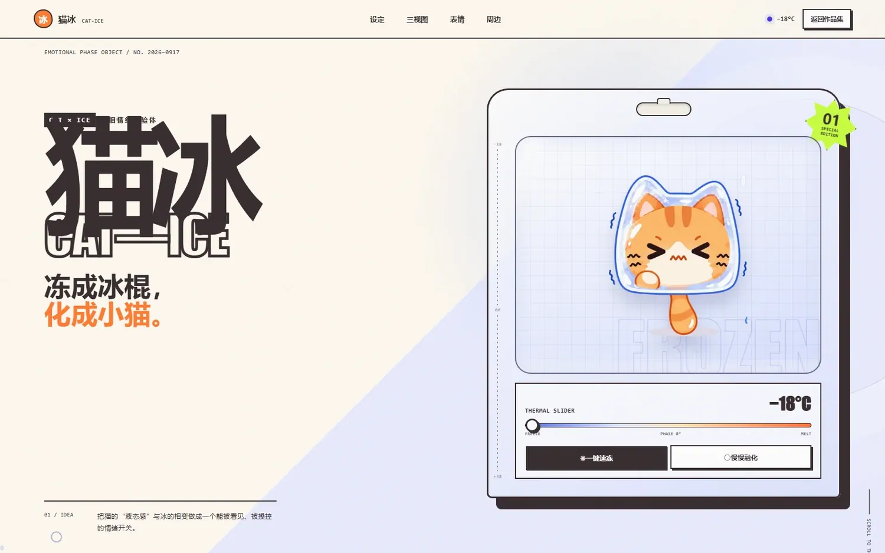
猫冰 CAT-ICE : THERMAL LAB 主视觉（暗化）
08 · 猫冰 CAT-ICE : THERMAL LAB
类别：IP 设计 ｜ 状态：IP 设计 · 系统完整 ｜ 主题色：纸 #0B1C26 / 墨 #EAF6F8 / 强调 #00D8E8（深色主题）
01 首屏 · 产品主视觉
主视觉：猫冰 CAT-ICE 主视觉（完整显示（不裁切）；同一张图另有一层模糊背景）
PROJECT 08 / IP 设计
猫冰 CAT-ICE : THERMAL LAB
用温度决定软硬的 IP 形象 ｜ IP 设计 · 系统完整
超大描边编号 08；右下竖排 SCROLL ↓；标题压在图片上。
02 一句定位 · 两个数字
温度决定它今天是硬的还是软的。
本段为全页文字密度最高处，大留白，仅一行定位句 + 两个数字。
03 错位双图 · 产品与细节
FIG. 01 大图：冻结态 / 软化态双态对照（铺满裁切）
 小图：情绪表情系统（铺满裁切；旋转 -2.2°，压在大图右下并越界）
小图：情绪表情系统（铺满裁切；旋转 -2.2°，压在大图右下并越界）
04 反相全幅 · 可实现功能
FUNCTIONS / 04 ｜ 功能均可实现
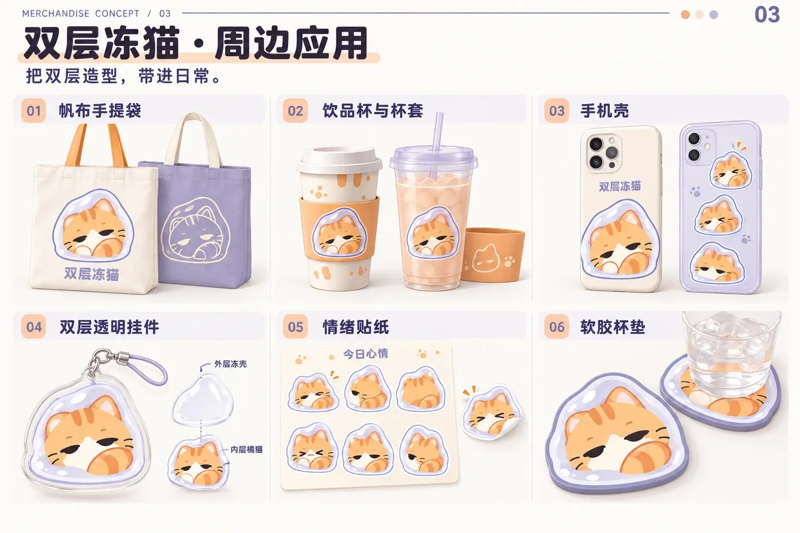
全幅产品图：周边应用与色彩规范（铺满裁切）
- 01 温度轴驱动（浮在图边缘的短词胶囊）
- 02 形态联动（浮在图边缘的短词胶囊）
- 03 快捷档位（浮在图边缘的短词胶囊）
- 04 延展系统（浮在图边缘的短词胶囊）
底色反相为 #F2EFE7 浅色；底部有描边巨字 OBJECT。
05 偏栏窄图 · 设计细节
DETAIL / MATERIAL / PROCESS（竖排）；巨型描边编号 08；大面积留白。
 窄图：冻结态正面视图（铺满裁切；旋转 +1.6°，硬阴影）
窄图：冻结态正面视图（铺满裁切；旋转 +1.6°，硬阴影）
IP 形象 / 潮玩挂卡
调研 · 草图 · 造型
06 横向胶片 · 图像档案
IMAGE ARCHIVE / 06 FRAMES ｜ DRAG ↔（可横向拖动，桌面 5 帧、宽度与上下位置各不相同）
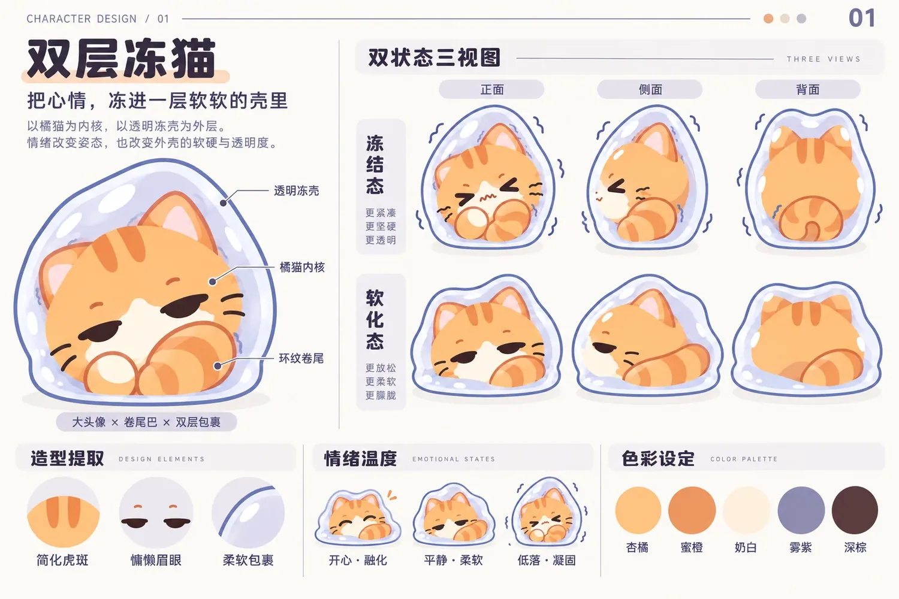
帧 01：角色设定稿与三视图（铺满裁切）
帧 02：冻结态 / 软化态双态对照（铺满裁切）
帧 03：情绪表情系统（铺满裁切）
帧 04：周边应用与色彩规范（铺满裁切）
帧 05：冻结态正面视图（铺满裁切）
07 收尾 · 进展与出处
进展 IP 方案 · 已完成系统设定
作品集内所有项目所述功能均可实现。
资料：现有资料 · 功能可实现
← 返回作品集
08 下一项目全幅预告
NEXT PROJECT / 06 →
模块化木质座椅
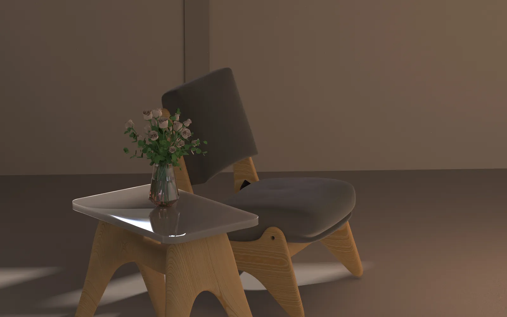
模块化木质座椅 主视觉（暗化）
06 · 模块化木质座椅
类别：产品设计 ｜ 状态：家具设计 · 结构方案 ｜ 主题色：纸 #EEE7DA / 墨 #2A231B / 强调 #8B6B43
01 首屏 · 产品主视觉
主视觉：白橡框架配浅暖灰软包（完整显示（不裁切）；同一张图另有一层模糊背景）
PROJECT 06 / 产品设计
模块化木质座椅
榫卯实木框架 × 可拆卸软包的一椅多用探索 ｜ 家具设计 · 结构方案
超大描边编号 06；右下竖排 SCROLL ↓；标题压在图片上。
02 一句定位 · 两个数字
把「换椅子」拆成「换软包」：木架长期用，软包承担变化。
本段为全页文字密度最高处，大留白，仅一行定位句 + 两个数字。
03 错位双图 · 产品与细节
 FIG. 01 大图：结构解析 · 软包沿框架内导轨推入（铺满裁切）
FIG. 01 大图：结构解析 · 软包沿框架内导轨推入（铺满裁切）
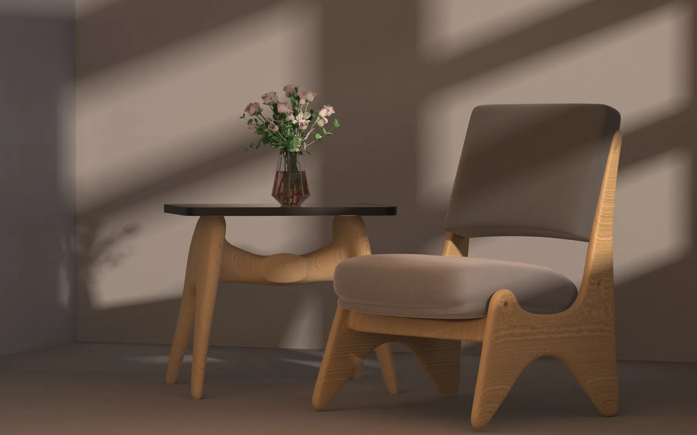
小图：暖光家居场景（铺满裁切；旋转 -2.2°，压在大图右下并越界）
04 反相全幅 · 可实现功能
FUNCTIONS / 04 ｜ 功能均可实现
 全幅产品图：整体空间关系（铺满裁切）
全幅产品图：整体空间关系（铺满裁切）
- 01 软包可抽换（浮在图边缘的短词胶囊）
- 02 坐垫单用（浮在图边缘的短词胶囊）
- 03 靠背可调（浮在图边缘的短词胶囊）
- 04 无外露五金（浮在图边缘的短词胶囊）
底色反相为 #17181B 深色；底部有描边巨字 OBJECT。
05 偏栏窄图 · 设计细节
DETAIL / MATERIAL / PROCESS（竖排）；巨型描边编号 06；大面积留白。
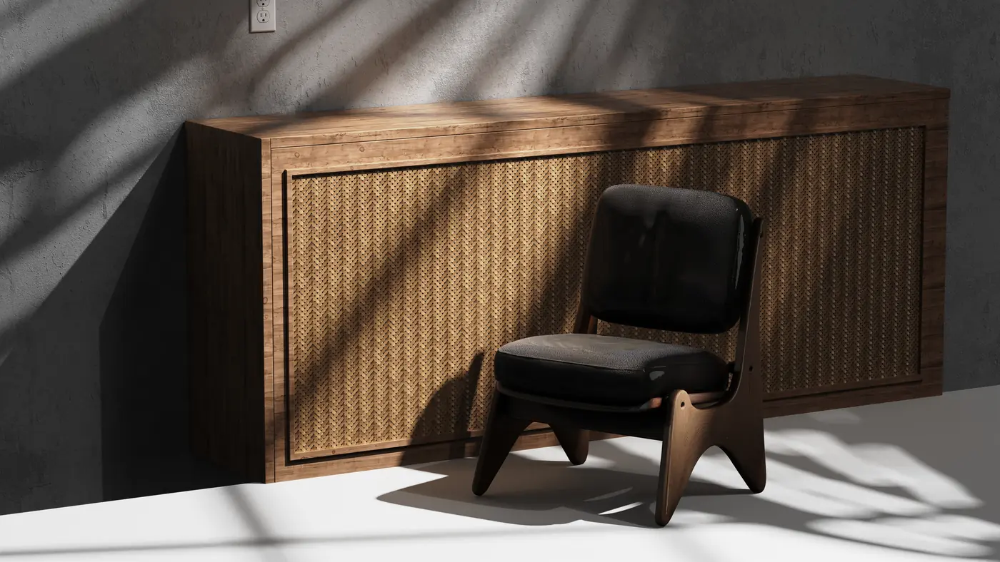
窄图：深色软包场景（铺满裁切；旋转 +1.6°，硬阴影）
产品 / 家具设计
结构研究 · 草图建模 · 材料实验
07 收尾 · 进展与出处
进展 结构方案 · 已完成可视化
作品集内所有项目所述功能均可实现。
资料：现有资料 · 功能可实现
← 返回作品集
08 下一项目全幅预告
NEXT PROJECT / 05 →
UI界面流程设计
 UI界面流程设计 主视觉（暗化）
UI界面流程设计 主视觉（暗化）
05 · UI界面流程设计
类别：用户研究 ｜ 状态：界面设计 · 流程完整 ｜ 主题色：纸 #F5F7FA / 墨 #172033 / 强调 #4C5BD4
01 首屏 · 产品主视觉
主视觉：展会信息页（完整显示（不裁切）；同一张图另有一层模糊背景）
PROJECT 05 / 用户研究
UI界面流程设计
漫展与社区服务流程化界面设计 ｜ 界面设计 · 流程完整
超大描边编号 05；右下竖排 SCROLL ↓；标题压在图片上。
02 一句定位 · 两个数字
把妆娘预约、服装租借、展会日程收进一条不绕路的流程。
本段为全页文字密度最高处，大留白，仅一行定位句 + 两个数字。
03 错位双图 · 产品与细节
 FIG. 01 大图：妆娘服务首页（完整显示（不裁切））
FIG. 01 大图：妆娘服务首页（完整显示（不裁切））
 小图：服装租赁与服务分类（完整显示（不裁切）；旋转 -2.2°，压在大图右下并越界）
小图：服装租赁与服务分类（完整显示（不裁切）；旋转 -2.2°，压在大图右下并越界）
04 反相全幅 · 可实现功能
FUNCTIONS / 03 ｜ 功能均可实现
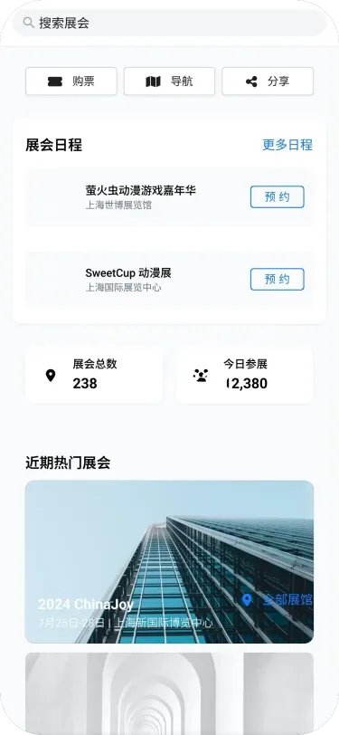
全幅产品图：展会日程与数据（完整显示（不裁切））
- 01 服务聚合（浮在图边缘的短词胶囊）
- 02 决策信息（浮在图边缘的短词胶囊）
- 03 闭环操作（浮在图边缘的短词胶囊）
底色反相为 #17181B 深色；底部有描边巨字 OBJECT。
05 偏栏窄图 · 设计细节
DETAIL / MATERIAL / PROCESS（竖排）；巨型描边编号 05；大面积留白。
 窄图：租借流程（完整显示（不裁切）；旋转 +1.6°，硬阴影）
窄图：租借流程（完整显示（不裁切）；旋转 +1.6°，硬阴影）
用户研究 / 界面体验
需求分析 · 信息架构 · 交互设计
06 横向胶片 · 图像档案
IMAGE ARCHIVE / 05 FRAMES ｜ DRAG ↔（可横向拖动，桌面 5 帧、宽度与上下位置各不相同）
帧 01：妆娘服务首页（完整显示（不裁切））
帧 02：服装租赁与服务分类（完整显示（不裁切））
帧 03：展会日程与数据（完整显示（不裁切））
帧 04：租借流程（完整显示（不裁切））
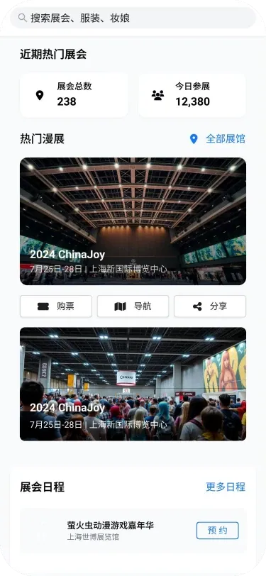
帧 05：分类导航（完整显示（不裁切））
07 收尾 · 进展与出处
进展 界面方案 · 已完成流程稿
作品集内所有项目所述功能均可实现。
资料：现有资料 · 功能可实现
← 返回作品集
08 下一项目全幅预告
NEXT PROJECT / 07 →
产品概念设计
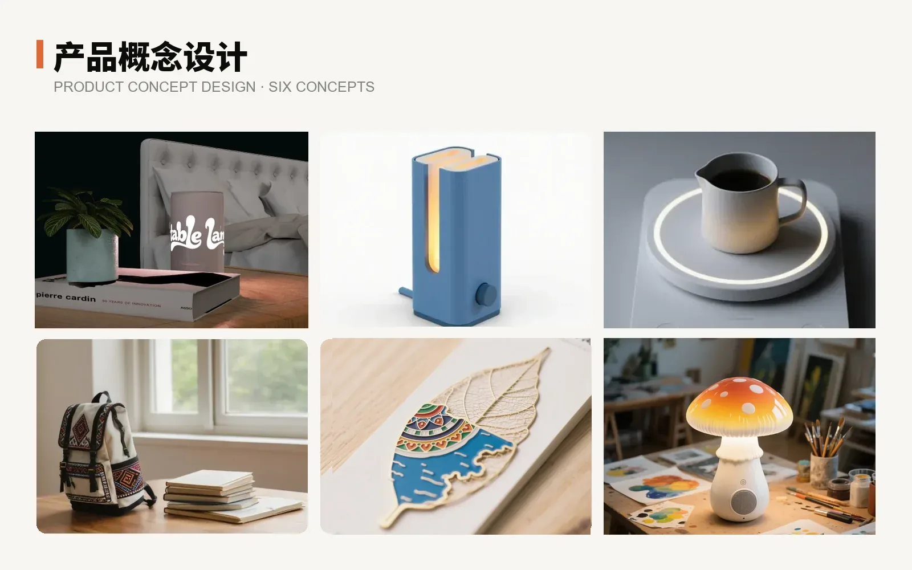
产品概念设计 主视觉（暗化）
07 · 产品概念设计
类别：产品设计 ｜ 状态：概念提案 · 六个方向 ｜ 主题色：纸 #14161C / 墨 #F2F1EE / 强调 #E67E33（深色主题）
01 首屏 · 产品主视觉
主视觉：六个产品概念总览（铺满裁切；同一张图另有一层模糊背景）
PROJECT 07 / 产品设计
产品概念设计
运用 AI 工具快速发散多元产品概念 ｜ 概念提案 · 六个方向
超大描边编号 07；右下竖排 SCROLL ↓；标题压在图片上。
02 一句定位 · 两个数字
从摇晃、定时、称重，一路走到云南的针脚、叶脉与林子。
本段为全页文字密度最高处，大留白，仅一行定位句 + 两个数字。
03 错位双图 · 产品与细节
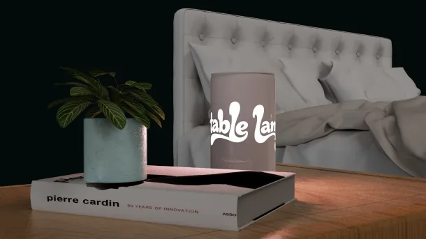
FIG. 01 大图：碳酸摇晃趣味灯（铺满裁切）
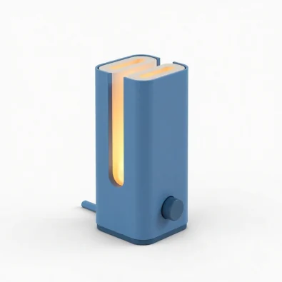
小图：面包机定时灯具（铺满裁切；旋转 -2.2°，压在大图右下并越界）
04 反相全幅 · 可实现功能
FUNCTIONS / 04 ｜ 功能均可实现
 全幅产品图：光渐变重量探测器（铺满裁切）
全幅产品图：光渐变重量探测器（铺满裁切）
- 01 摇晃蓄光（浮在图边缘的短词胶囊）
- 02 双控件定时（浮在图边缘的短词胶囊）
- 03 重量可视化（浮在图边缘的短词胶囊）
- 04 在地题材（浮在图边缘的短词胶囊）
底色反相为 #F2EFE7 浅色；底部有描边巨字 OBJECT。
05 偏栏窄图 · 设计细节
DETAIL / MATERIAL / PROCESS（竖排）；巨型描边编号 07；大面积留白。
窄图：彝族服饰元素背包（铺满裁切；旋转 +1.6°，硬阴影）
AIGC 辅助产品概念发散
关键词梳理 · 批量生成 · 风格筛选
06 横向胶片 · 图像档案
IMAGE ARCHIVE / 06 FRAMES ｜ DRAG ↔（可横向拖动，桌面 5 帧、宽度与上下位置各不相同）
帧 01：碳酸摇晃趣味灯（铺满裁切）
帧 02：面包机定时灯具（铺满裁切）
帧 03：光渐变重量探测器（铺满裁切）
帧 04：彝族服饰元素背包（铺满裁切）
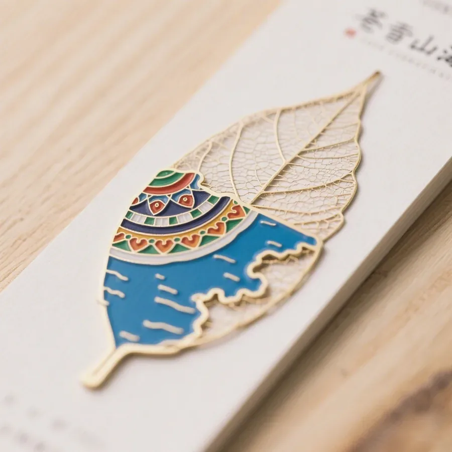
帧 05：苍山洱海叶脉书签（铺满裁切）
07 收尾 · 进展与出处
进展 概念提案 · 已完成可视化
作品集内所有项目所述功能均可实现。
资料：现有资料 · 功能可实现
← 返回作品集
08 下一项目全幅预告
NEXT PROJECT / 01 →
《心景》疗愈灯具
《心景》疗愈灯具 主视觉（暗化）